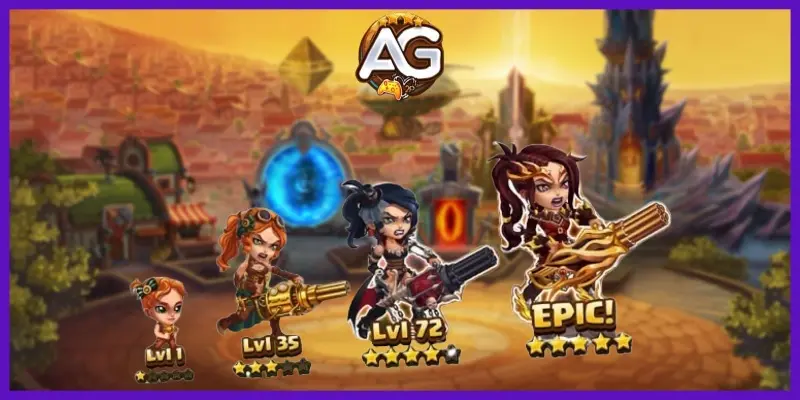

Refinador de Evolução de Estrelas no Hero Wars Mobile
Introdução
O Refinador de Evolução de Estrelas atua como uma ferramenta fundamental no Hero Wars Mobile, facilitando a progressão dos heróis para níveis de estrela mais altos. Esta revisão visa fornecer insights sobre a funcionalidade, aquisição e utilização estratégica deste refinador.
Aquisição e Uso
Primeiramente, o Livro Refinador de Evolução é obtido principalmente por meio da participação em eventos, enfatizando a importância de se envolver ativamente em eventos para acumular fragmentos de pedra da alma. Esses fragmentos são instrumentais para fortalecer os heróis, pois cada nível de estrela alcançado se traduz em um aumento de poder no campo de batalha.

Interação com Pedras da Alma
É importante destacar a interação entre Pedras da Alma e reforço de estrelas, onde pedras da alma em excesso podem render Troféus do Campeonato Global. Essa dinâmica incentiva o gerenciamento eficiente de recursos e recompensa os jogadores por acumularem recursos excedentes.
Exceções
No entanto, é crucial observar que o Refinador de Evolução não se aplica aos heróis Jet, Lara Croft e Machadinha, exigindo métodos alternativos para adquirir pedras da alma. Essa exceção destaca a diversidade nos mecanismos de progressão de heróis dentro do jogo.
Detalhamento de Recursos
A tabela abaixo detalha os requisitos de pedras da alma e os custos de ouro associados ao reforço de estrelas, proporcionando clareza sobre o gasto de recursos para cada nível de estrela. Esse detalhamento auxilia os jogadores a formular estratégias econômicas para o avanço dos heróis.
Resumo do Refinador de Evolução de Estrelas
Em resumo, o Refinador de Evolução de Estrelas no Hero Wars Mobile representa um componente vital da progressão de heróis, enfatizando o planejamento estratégico, o gerenciamento de recursos e a participação ativa em eventos. Compreender sua mecânica e otimizar sua utilização são essenciais para maximizar o potencial dos heróis e alcançar o sucesso na paisagem dinâmica do jogo.